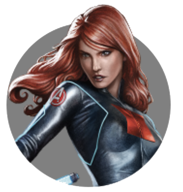

BLACK WIDOW
by Maksim4ik
Posted on 29 Mart , 2019 at 12:00 PM
ЧЕРНАЯ ВДОВА - НАТАША РОМАНОВА
BLACK WIDOW - NATASHA ROMANOVA
Наташа Романова, известная также как Черная Вдова, — эксперт в шпионаже и боевых искусствах. Наташа в течение долгого времени выполняла приказы КГБ, но позже стала одним из лучших агентов службы Щ.И.Т. и присоединилась к команде Мстителей.
Наталья Альяновна «Наташа» Романова, более известная как Чёрная вдова (Black Widow) — одна из самых лучших шпионов и ассасинов в мире. Изначально работала агентом КГБ, позже стала членом Щ.И.Т.а, международного контрразведывательного управления. Имеющая огромное мастерство в боевых искусствах и вооруженная миниатюрным электрошоковым устройством, Чёрная Вдова стала одним из самых талантливых агентов Щ.И.Т.а. Когда Локи объявил войну Земле, Чёрная вдова присоединилась к команде Мстителей и оказала помощь в обороне Нью-Йорка.
После того, как Мстители победили Локи, она продолжила работать со Щ.И.Т.ом, на этот раз вместе с Капитаном Америка. После Восстания ГИДРЫ, в результате которого всё её сомнительное прошлое было раскрыто миру, она исчезла с радаров, чтобы восстановить своё прикрытие. Позже она вновь присоединилась к Мстителям, уничтожая различные ячейки ГИДРЫ по всему миру, а также враждебного робота Альтрона. В отличие от большинства участников оригинальных Мстителей, Чёрная вдова, после Наступления Альтрона, осталась членом нового состава команды.
About

Maksim4ik
Age:14
Sex:male
maksdrobotushchenko@gmail.com